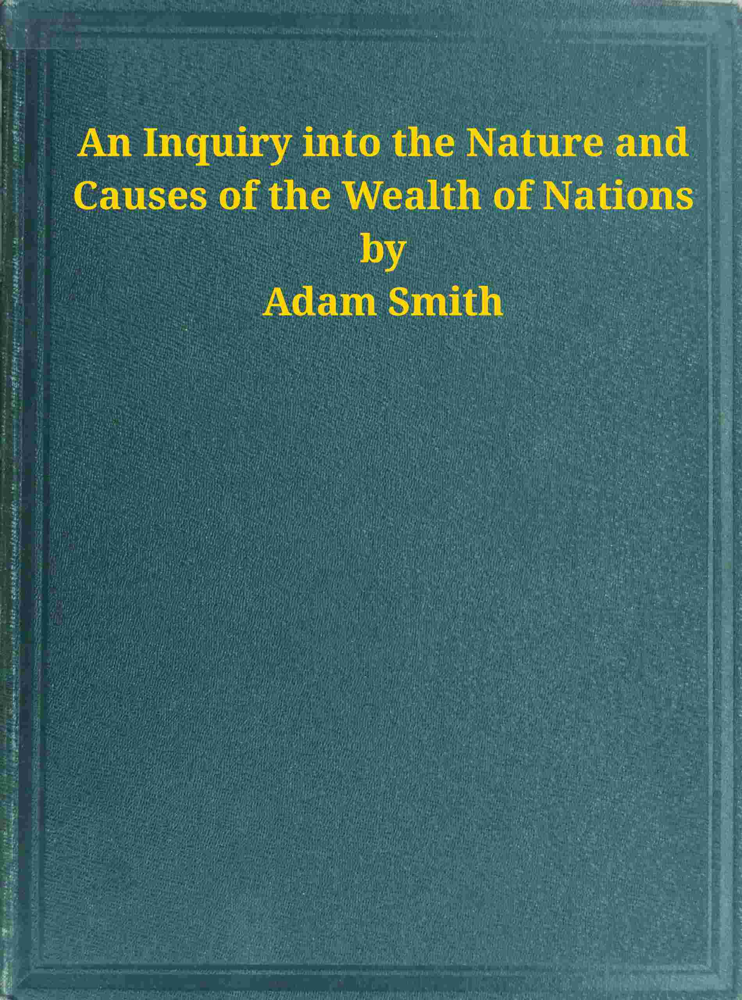

An Inquiry into the Nature and Causes of the Wealth of Nations
بحث في طبيعة وأسباب ثروة الأمم
الاقتصاد والمجتمع
ملك عام
ترجمة كاملة
كتاب آدم سميث المؤسس لعلم الاقتصاد: تقسيم العمل، اليد الخفية، طبيعة القيمة والسعر، الأجور والريع، رأس المال والنقود، الميزانية التجارية والاستعمار والمالية العامة — خمسة كتب كاملة مع ملحق آدم سميث.
| المؤلف | آدم سميث — Adam Smith |
| سنة النص الأصلي | ١٧٧٦ |
| كلمات المصدر (الإنجليزية) | ٣٠٧٣١٤ |
| كلمات الترجمة (العربية) | ٢٨٣٨٢٧ |
| مقاطع الترجمة المدققة | ٢١٢ |
| مدة القراءة التقريبية | ≈ ٦٤٥٠ دقيقة |
الترخيص والحقوق: النص الأصلي في الملك العام (غوتنبرغ #3300). هذه الترجمة العربية منشورة بإذن حر.